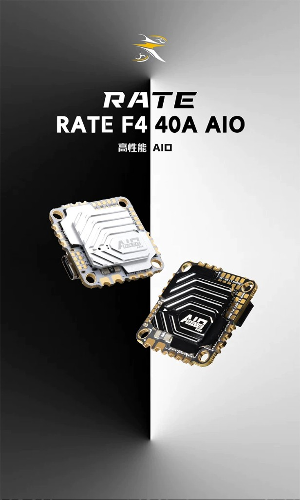
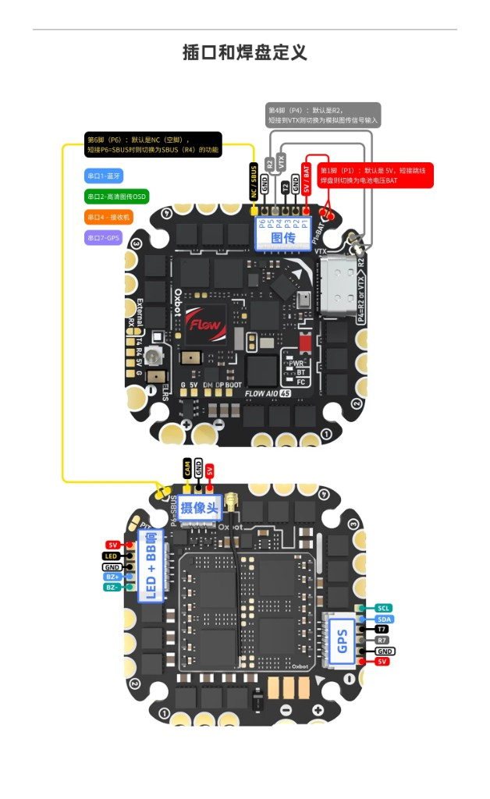
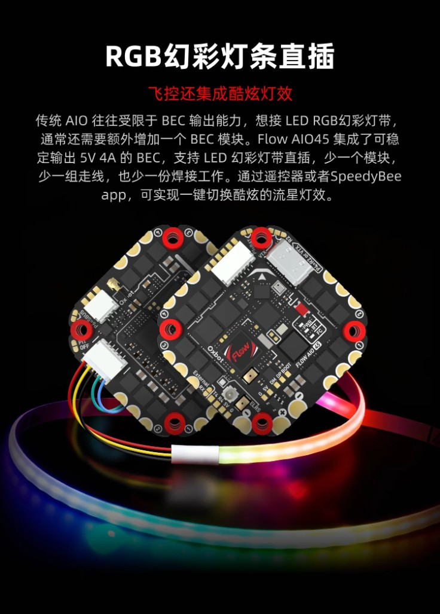
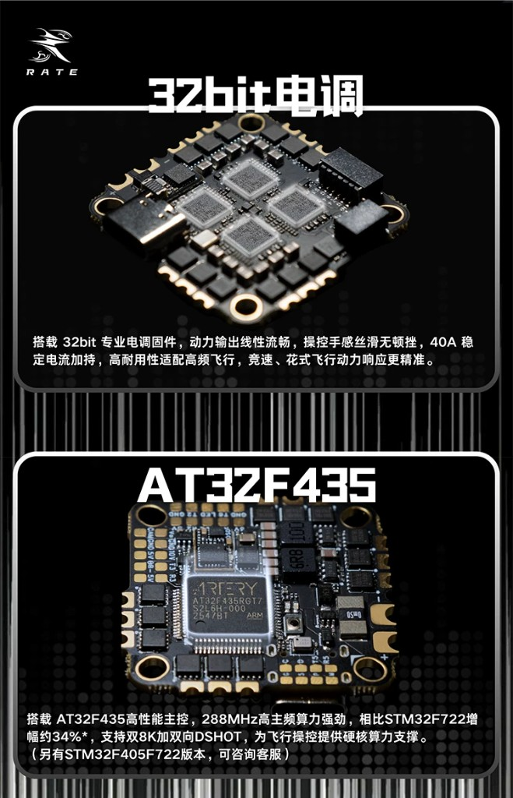
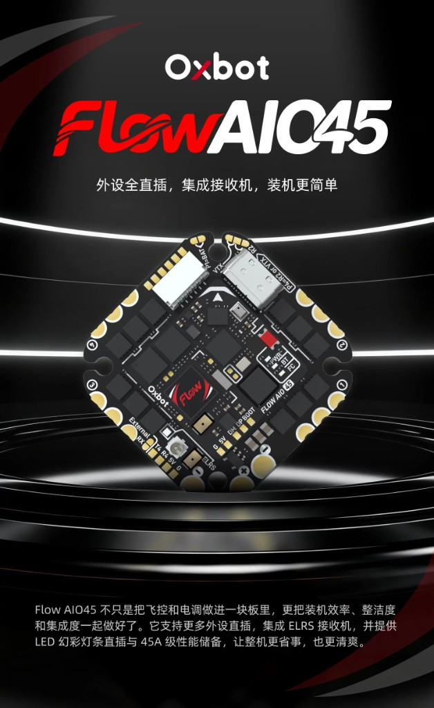
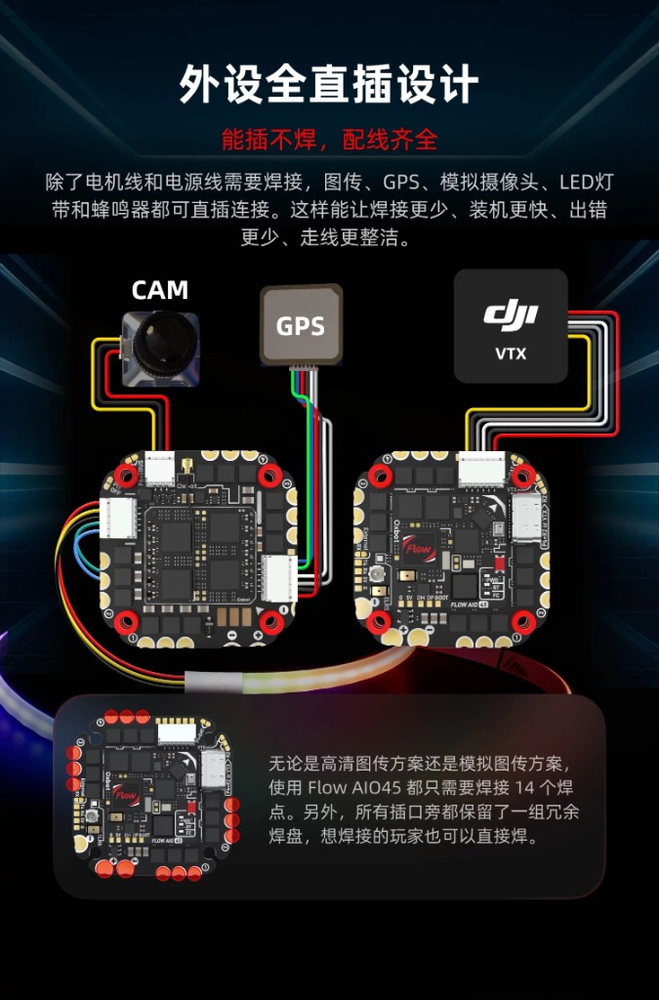
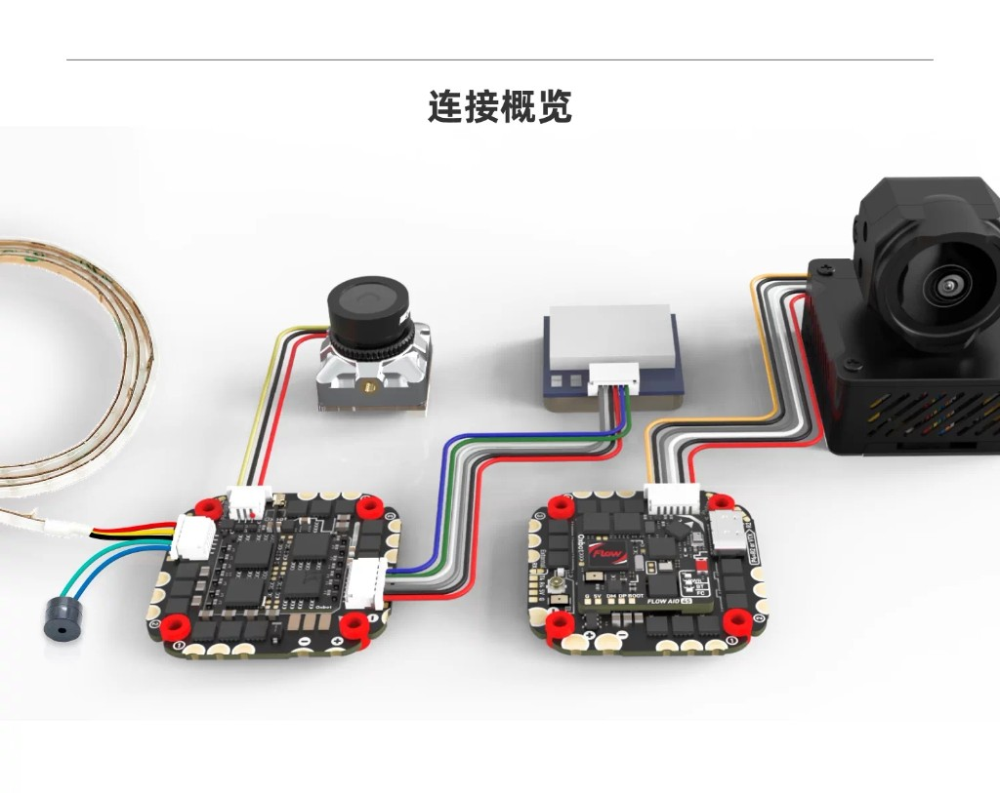
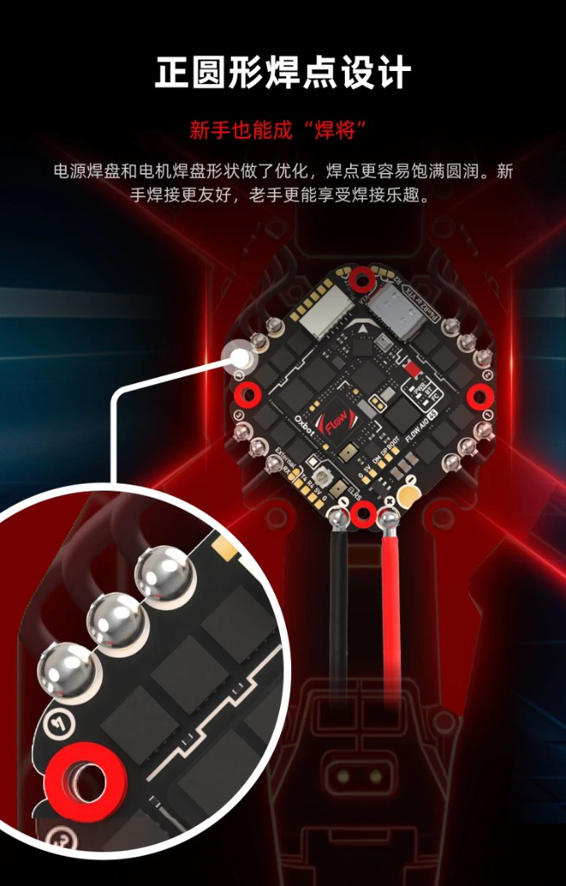
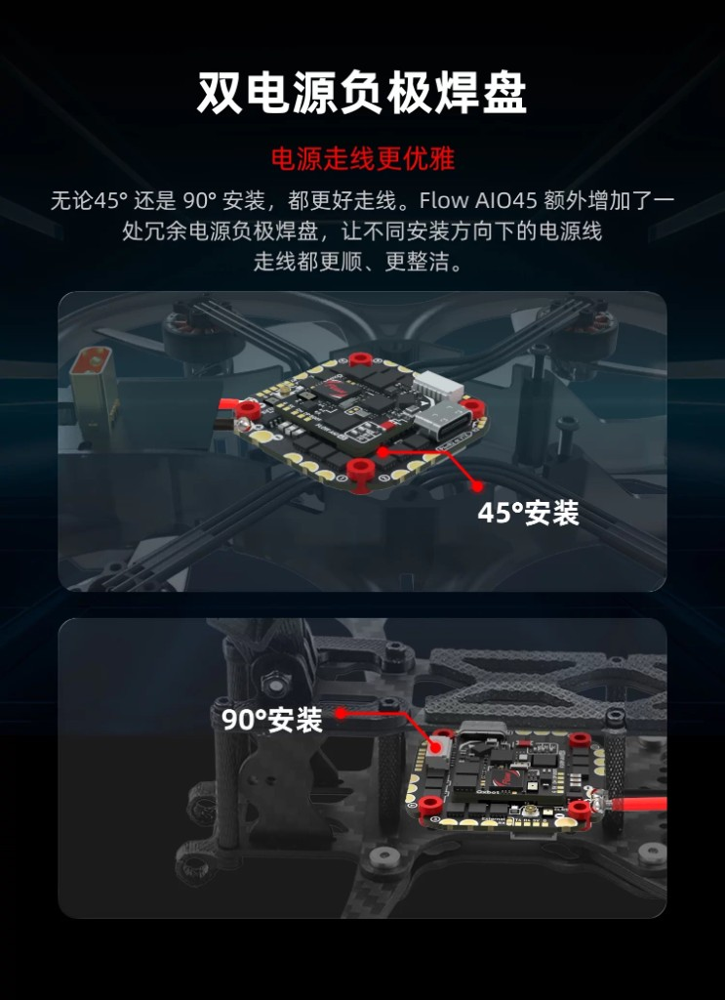

飛控硬體在看什麼？
AIO＝飛控＋電調做在同一塊板。球機要認：孔距、BEC 能不能餵 22 顆 LED、有沒有內建 ELRS、電容有沒有焊。下面三款是本隊已購；更多產品照進圖鑑。
調參、Rates、Failsafe 請改開 飛控設定，本頁只談硬體與接線。
本隊三款 AIO 的規格、焊點與接線。軟體設定已獨立成「飛控設定」分頁。名詞請先看 新手入門 · 飛控。
AIO＝飛控＋電調做在同一塊板。球機要認：孔距、BEC 能不能餵 22 顆 LED、有沒有內建 ELRS、電容有沒有焊。下面三款是本隊已購；更多產品照進圖鑑。
調參、Rates、Failsafe 請改開 飛控設定，本頁只談硬體與接線。

約 31–32mm 方板（產品圖常寫 32×32、官網多寫 31×31）、8 層 2oZ 厚銅、40V MOS。電調 BLHeli_S、2–6S、持續 40A／峰值 45A，對 1408／DYH／1507 綽綽有餘。
自帶可編程 LED 焊盤（LED B- 5V GND）與內建電流感測（產品圖電流計比例 210）。

33×33×5.5mm（有殼高 7mm）。主控 AT32F435 @ 288MHz（廠方稱較 F722 約 +34%），支援雙 8K 與雙向 DShot。 內建 32bit 電調、持續 40A、3–6S。BEC 5V 3A＋10V 2A（HD）；SPL06、MSP OSD、16MB 黑匣子。 LED：5V／GND／DIN。配件含 XT30 電源線與 35V 470µF 電容。
三塊板裡 LED 餘裕最大（5V 4A），而且內建 ELRS 接收機——不用外接、不用焊接收機線，省重又少一個掉線點。
電調 OX32 32bit、45A、3–6S，預設開 雙向 DShot（可開 RPM 濾波）。
ICM42688P（含時鐘同步）、DPS310 氣壓計、16MB 黑匣子、MAX7456 類比 OSD。孔距 25.5×25.5mm。
Betaflight target：OXBOT_FLOW_AIO45。
缺點：12.6g 是三塊裡最重（比 HAKRC 多約 4g）。
VTX BEC OFF，關閉圖傳供電，避免無用耗電與發熱。
Oxbot 正面
Oxbot 接口定義
Oxbot LED 直插 HAKRC F411 參數
HAKRC F411 參數
AT32F435＋32bit 電調 RATE 主控特寫
RATE 主控特寫 RATE 32bit 電調
RATE 32bit 電調| 項目 | HAKRC F411 40A | RATE F4 40A | Oxbot Flow AIO45 | 球機影響 |
|---|---|---|---|---|
| 主控 | STM32F411CEU6 | AT32F435 | AT32F435 | F411 資源較少但夠用。三塊 target 都不同，勿互刷 |
| IMU | ICM42688 | ICM42688* | ICM42688P（時鐘同步） | 同級；Oxbot 有 CLKin 略優 |
| OSD | AT7456E（類比） | RATE MSP OSD | MAX7456（類比） | 有鏡頭才用 |
| 黑匣子 | 16M | 16MB | 16MB（W25Q128） | 調參可下載 log |
| BEC | 5V 2A | 5V 3A（＋10V 2A） | 5V 4A | LED 最寬裕＝Oxbot；F411 板務必調暗 |
| 電調固件 | BLHeli_S（G-H-30） | 32bit＋雙向 DShot | OX32 32bit＋雙向 DShot | 攻擊機優先 RATE／Oxbot：可直接開 RPM 濾波。原廠 BLHeli_S 不支援雙向 DShot，要刷 Bluejay 才有機會 |
| 電調電流 | 持續 40A／峰值 45A | 穩定 40A | 45A | 單顆馬達峰值約 25A → 三塊都夠 |
| 電池輸入 | 2–6S | 3–6S | 3–6S | 本隊 4S 都 OK |
| 接收機 | 需外接（SBUS／UART） | 需外接（ELRS→UART2） | 內建 ELRS | Oxbot 省一顆接收機＋線，少一個故障點 |
| 電流計比例 | 210 | 未標示（實飛校正） | Betaflight 預設值 | F411 先設 ibata_scale = 210 |
| 重量 | 8.5g | 8g／9.6g | 12.6g | Oxbot 多約 3–4g；但省下接收機（約 1–2g）後差距縮小 |
| 尺寸／孔距 | 約 31–32mm／25.5mm（亦常見 26.5） | 33×33mm／25×25mm | 25.5×25.5mm | 孔距三種不完全相同！機架要先對好 |
| 圖傳供電 | — | 10V 2A 供 HD 圖傳 | VTX BEC OFF 開關 | 球機不裝圖傳時，務必關閉 Oxbot 圖傳供電 |
| 濾波電容 | M2 減震球、XT30、270µF 電容 | 減震球、排線、35V 470µF、XT30 | （看賣場） | 電容一定要焊在 VBAT 正負極旁 |
怎麼分配（建議）： 攻擊機＝Oxbot Flow AIO45（45A＋雙向 DShot＋內建 ELRS＋BEC 4A 最穩，重一點可接受）或 RATE； 防禦／輕量機＝HAKRC F411（最輕 8.5g，但 LED 要調暗；原廠韌體無法開 RPM 濾波）。

M1–M4 在四角；LED 焊盤在板子上緣，另有原廠 RGB 燈與 USB。
| 焊盤／插座 | 腳位 | 接什麼 |
|---|---|---|
| LED（上緣） | LED B- 5V GND | WS2812 燈條：訊號→LED、＋5V→5V、負→GND。B- 是蜂鳴器負極，別當 GND 用 |
| M1–M4（四角） | 各角一組 | 四顆馬達；順序與轉向在 Betaflight 馬達頁確認 |
| 左側排 | 5V G SBUS R1 T1 | 接收機（SBUS 或 UART1 的 R1／T1） |
| 左側排（下） | G 5V T3 R3 SCL SDA | UART3 與 I2C（外掛感測器） |
| 下方排 | G 5V VTX T2 R2 | 圖傳與 UART2 |
| 下方排 | BAT G 5V CAM B10 G | 電池電壓、鏡頭、B10（蜂鳴器／額外 IO） |
| 6pin 插座 | R1 G R2 T2 G BAT | 圖傳／接收機用排線，免焊 |
| USB 旁 | GND 5V DM DP | USB 備用焊盤（Type-C 撞壞時救援） |
| 板中央 | RGB 燈 | 原廠板載燈，非比賽用主燈 |
B-。焊完先不接電池、只插 USB 確認燈條會亮再上電。
球機怎麼讀原廠圖：接線圖會畫鏡頭、圖傳、GPS（穿越機用法）。本隊足球機不裝圖傳／GPS／鏡頭——接好 ELRS 接收機＋LED＋蜂鳴器＋濾波電容＋四馬達／電池 即可。UART4／圖傳相關埠可略過。
鏡頭、圖傳、LED、蜂鳴器、接收機、GPS 全部標好。球機最常用：ELRS→UART2、LED、蜂鳴器、電容。

減震球 M2×6.6×5、尼龍螺母與墊片、sh1.0 排線、35V 470µF 電容、XT30 電源線。
| 外設 | 接法（官方圖） | 球機備註 |
|---|---|---|
| LED 燈條 | 5V GND DIN→LED | WS2812 訊號進 LED 焊盤；環＋尾串成一路 |
| 蜂鳴器 | 5V BB- | 可開 visual beeper，低電燈也閃 |
| ELRS／TBS 接收機 | 5V GND RX2 TX2 | 串口接收機；端口表 UART2＝Serial RX |
| SBUS 接收機 | 5V GND SBUS | 走專用 SBUS 焊盤 |
| 攝像頭 | 5V GND VID | 純對戰可不裝 |
| 類比圖傳 | VBAT（7–26V）、GND、VID、DATA／SA | UART1＝VTX 控制（依協議選） |
| HD 圖傳（O4 等） | 側邊 6pin（10V／VBAT、GND、UART） | UART4＝VTX（MSP＋DisplayPort） |
| GPS（選配） | UART3 或 UART5＋I2C | 室內球機通常不裝 |
| 濾波電容 | 35V 470µF 焊在電池正負極旁 | 一定要焊；漏焊易壓降／燒板 |
球機怎麼讀原廠圖：原廠示意常畫鏡頭、GPS、圖傳（穿越機用法）。本隊足球機不裝圖傳／GPS／鏡頭——只要焊好 四顆馬達＋電池線＋LED（可直插），內建 ELRS 對頻即可。圖傳插座請關 VTX BEC OFF。

產品總覽
外設直插（能插不焊）
連接概覽（原廠）
馬達／電源焊點
雙電源負極焊盤| 項目 | 接法 | 球機備註 |
|---|---|---|
| 馬達 M1–M4 | 四角焊盤（原廠稱約 14 個焊點含電池） | 必焊；正反槳方向依機架 |
| 電池 VBAT | 大焊盤 +／-（另有冗餘負極） | 必焊；45°／90° 安裝可選較順的負極 |
| LED 燈條 | 直插座：5V LED GND（可含蜂鳴器腳） | WS2812；BEC 5V 4A 餘裕大，亮度仍建議 40–50% |
| 接收機 | 內建 ELRS（U.FL 天線座） | 對頻即可；外接 RX 焊盤僅備援 |
| VTX／CAM／GPS | 原廠有直插座 | 球機不裝；關 VTX BEC |
| 圖傳供電 | VTX BEC OFF | 不裝圖傳必關，免空耗電／發熱 |
| 項目 | 設定 | 為什麼 |
|---|---|---|
| 電調協議 | Dshot300（或 Dshot600） | BLHeli_S 支援到 Dshot600；F411 用 Dshot300 最穩 |
| RPM 濾波 | 原廠不能開 | 原廠 BLHeli_S 不支援雙向 DShot。硬開會抓不到轉速甚至不起轉；要開必須先刷 Bluejay，且 F411 不是每個馬達腳位都保證可用 |
| 電流計比例 | set ibata_scale = 210 | 官方標示 210 |
| LED | 亮度約 40 | BEC 只有 2A |
set ibata_scale = 210 feature LED_STRIP set ledstrip_brightness = 40 set ledstrip_visual_beeper = ON set vbat_warning_cell_voltage = 35 set vbat_min_cell_voltage = 33 save
HAKRCF411D、電調 BLHELI_S (G-H-30)。刷之前先記下來。
| 項目 | 設定 | 為什麼 |
|---|---|---|
| 電調協議 | Dshot300／600＋雙向 DShot ON | 32bit 電調支援；可開 RPM 濾波讓對抗更穩 |
| RPM 濾波 | 可開 | 這是相對 F411 的最大優勢 |
| 接收機（ELRS） | UART2＝Serial RX | 線接 5V GND RX2 TX2 |
| LED | 亮度約 40–50 | BEC 5V 3A，餘裕比 F411 大 |
| 低壓警告 | Warning 3.5V／Min 3.3V／芯 | 兩塊板相同 |
| 氣壓計 | 球機室內可關 | 不用高度模式就關 |
feature LED_STRIP set ledstrip_brightness = 40 set ledstrip_visual_beeper = ON set vbat_warning_cell_voltage = 35 set vbat_min_cell_voltage = 33 save
學生注意：AIO＝飛控與電調同一塊，省線省重，但燒一路等於整塊換。撞機後檢查四角 MOS。RATE 主控是 AT32，刷固件選廠商／對應 target，勿用 STM32 F411 固件硬刷。
開箱後先把 470µF／35V 電容焊在 XT30 電池端正負極（越靠近板越好）。
| 項目 | 設定 | 為什麼 |
|---|---|---|
| Betaflight target | OXBOT_FLOW_AIO45 | 主控 AT32F435；勿刷成 RATE 或 F411 的 target |
| 電調協議 | Dshot300／600＋雙向 DShot ON | OX32 32bit 支援；原廠預設已開 DShot telemetry |
| RPM 濾波 | 可開 | 對抗震動大，開了較穩 |
| 接收機 | 內建 ELRS，不用外接 | 只要把 ELRS 對頻（bind）；省一顆接收機與焊線 |
| LED | 亮度 40–50 都很寬裕 | BEC 5V 4A，三塊板中餘裕最大 |
| 圖傳供電 | 球機不裝圖傳 → 務必開啟 VTX BEC OFF | 關閉圖傳 BEC，避免無用耗電與發熱 |
| 低壓警告 | Warning 3.5V／Min 3.3V／芯 | 三塊板都一樣 |
| 氣壓計 | DPS310；室內球機可關 | 不用高度模式就關 |
VTX BEC OFF 已開啟。這個名稱的意思是「關閉圖傳 BEC 供電」。
feature LED_STRIP set ledstrip_brightness = 45 set ledstrip_visual_beeper = ON set vbat_warning_cell_voltage = 35 set vbat_min_cell_voltage = 33 save